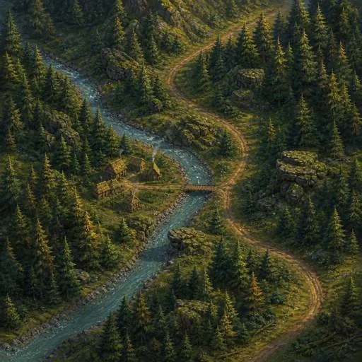
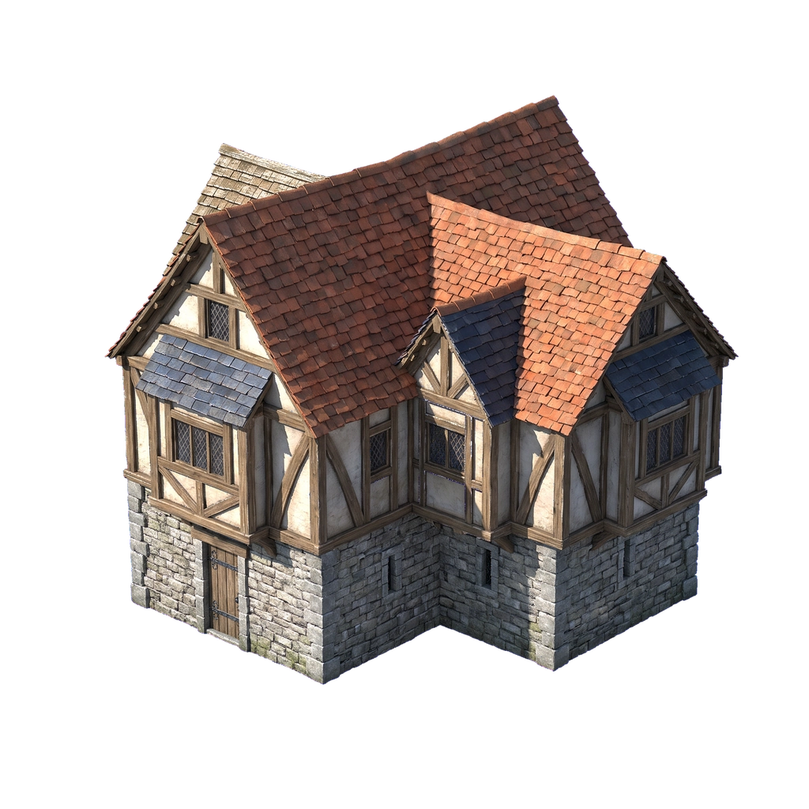
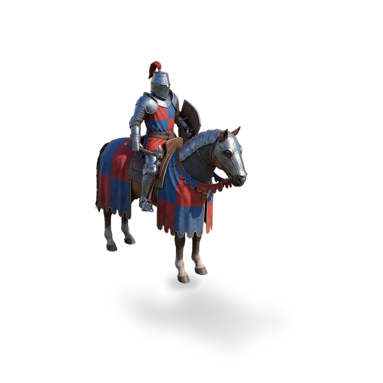

Adventure terrain
512 × 512. One narrow wooden crossing; no reserved fortified-town footprint, mine apron or broad dwelling clearing. Retain as forest/river material evidence. Do not enlarge it into this 16 × 10 region.
Ages of Dominion / 3 October 2026 / design planning
One geography owns the terrain, empty clearings, approaches, hero route and army slots. The drawings below are a placement blueprint for review. The semi-realistic finished scene is still missing.
01 / spatial proposal

The reference is shown separately. Its artwork does not supply the blueprint terrain.
The coloured symbols reserve ground positions. They are not replacement game art. Roads are authored design corridors; no movement costs, combat rules or pathfinding are implemented.
| ID | Purpose | Reserved ground | Approach / facing |
|---|
02 / reuse limits
Existing art was inspected before proposing new production. A valid filename, transparent border or sharp panorama does not establish camera and footprint fit.

512 × 512. One narrow wooden crossing; no reserved fortified-town footprint, mine apron or broad dwelling clearing. Retain as forest/river material evidence. Do not enlarge it into this 16 × 10 region.

6336 × 2688. Low horizon camera; foreground walls, timber and barrel already occupy the ground. No authored two-bank, two-deck 7 × 10 geometry. Cropping out the sky cannot register its obstacles.

1024 × 1024. A single house with a three-quarter roof, not a fortified settlement. It cannot fill A1’s 3 × 3 plot. Keep for a secondary site only after its ground base, camera and entrance fit are measured.

768 × 768. Horse faces toward the viewer/right; the plan needs route-facing aerial poses. Hooves are separate from the long baked shadow. It remains a scale reference, not mounted Gawain or an opposed formation set.
03 / review status
The geography and shared registration are proposed. The finished materials, matched aerial sites, directional actors and natural contact shadows remain unresolved. Previous scene previews remain rejected; this blueprint has no owner acceptance.
Compact 18px resource symbols / 28px rail remain the HUD contract. Tactical and Defense omit campaign resources. Both orientations remain supported. The eight-age linked campaign, hidden Adventure 16 × 10, Tactical 7 × 10 / commander (0,9), and Defense 9 × 15 scope are retained.
No game source, dependency installs, builds/APKs, image jobs or generator code. Old game and raw art remain read-only.